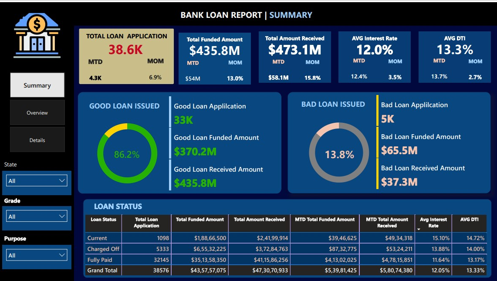

Bank Loan Analysis
About The Project
Created an interactive dashboard for analysis of a bank's loan portfolio, using a combination of data modeling, statistical methods and DAX calculations within a Power BI dashboard. This report addresses key business requirements and highlights a data-driven approach to improve lending processes, by exploring various performance indicators, customer characteristics, geographical trends and risk indicators. The primary objective of this project is to provide stakeholders with actionable insights, which will allow the bank to better manage their lending portfolios and make sound business decisions.
View on GitHubDashboard Showcase
